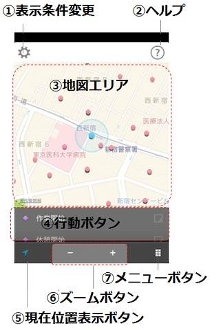
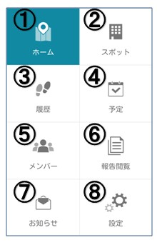

各部の説明¶
ホーム画面について¶
ホーム画面はcyzenを利用するためのスタートの画面です。
- ①表示条件変更
- 地図上に表示する、スポット情報、行動予定情報、履歴情報、移動線の表示・非表示を変更することができます。
- ②ヘルプ
- アプリの操作方法を確認することができます。
- ③地図エリア
- 現在位置、スポット情報、行動予定情報、履歴情報が表示されます。地図エリアを指で動かし、表示場所を変更することもできます。
- ④行動ボタン
- 「今何をしているか」を報告できます。また、右側のコメントエリアを押すと、140文字までのコメントを添付することができます。
- ⑤現在位置表示ボタン
- GPSを使って、現在位置を地図の中心にします。
- ⑥ズームボタン
- 地図のズームアウト/ズームインを行います。
- ⑦メニューボタン
- メニュー画面に移動します。
メニュー画面について¶
メニュー画面より、cyzenの各画面に移動することができます。
- ①ホーム画面
- 行動報告を行う画面に移動します。
- ②スポット画面
- スポット情報の閲覧、作成、編集を行う画面に移動します。 （権限により、できない操作があります。）
- ③履歴画面
- 自分およびメンバーの行動履歴を閲覧する画面に移動します。 （メンバー1人の1日分の行動を見ることができます。）
- ④予定画面
- 自分およびメンバーの予定を操作する画面に移動します。 （権限により、できない操作があります。）
- ⑤メンバー画面
- メンバーの現在の活動を閲覧する画面に移動します。 （グループメンバーの最新履歴を1件、見ることができます。）
- ⑥報告閲覧画面
- メンバー報告（コメント）の閲覧、検索を行う画面に移動します。
- ⑦お知らせ画面
- サービス運営者からのメッセージを閲覧する画面に移動します。
- ⑧設定画面
- アプリの動作に関連する各設定を行う画面に移動します。
地図アイコンについて¶
アイコンの説明 アイコン 説明 現在位置： 現在の場所を表します。 薄青の円の大きさがGPS誤差を表しています。 スポット情報：予め登録したスポット情報を表します。 
予定情報： 予め登録した予定情報を表します。 時計の針は予定時刻を表しています。 履歴情報（通常）： 行動ボタンを押した場所を表します。 履歴情報（出勤）： 行動ボタン（出勤）を押した場所を表します。 履歴情報（退勤）： 行動ボタン（退勤）を押した場所を表します。 履歴情報（予定消込）： 予定情報が存在するスポットに対し、 チェックインを行った場所を表します。
ショートカットアイコンについて¶
ショートカットアイコンの説明 アイコン 説明 電話： スポットの電話番号に電話を掛けます。 予定登録： 選択したスポットで予定登録を行います。 担当者表示： 選択したスポットの担当者一覧を表示します。 ルート表示： 選択したスポットまでのルートを表示します。 （マップアプリを起動します） スポット表示： 選択した予定のスポット情報を表示します。